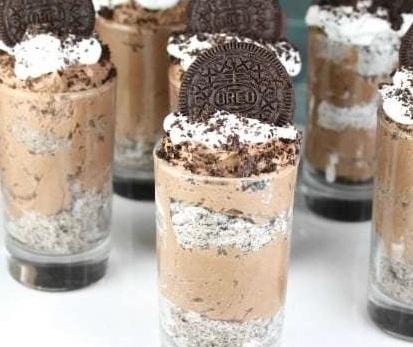
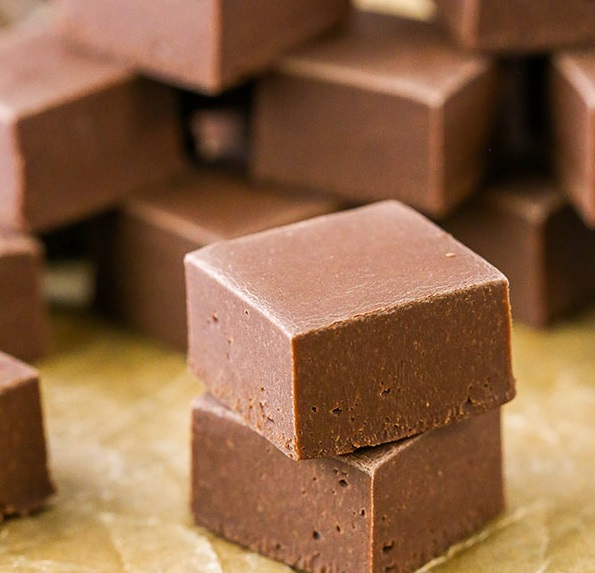

|
Peanut Butter Cups
Yields 6 servings
Time: 8 minutes
- 3 tablespoons powdered sugar, sifted
- 1/2 cup creamy peanut butter
- 1 cup chocolate, melted
- Prepare a cupcake tin with 6 liners.
- Stir peanut butter and powdered sugar together until smooth.
- Spread 1 to 2 tablespoons of chocolate in the bottom of each cupcake liner.
- Dollop 1 to 2 teaspoons of the peanut butter mixture on top of the chocolate.
- Cover each dollop of peanut butter with more chocolate and smooth out the top.
- Refrigerate for 1 hour or until chocolate has hardened.
- Remove peanut butter cups from the liners.
|
|  |
Chocolate Cheesecake
Yields 8 servings
Time: 10 minutes
- 11.5 oz milk chocolate chips
- 1/4 cup milk
- 1/2 cup powdered sugar
- 8 oz whipped topping
- 12 Oreo cookies, crushed
- Oreo cookies (optional)
- Add milk chocolate chips and milk to a microwave safe bowl and cook on medium in 30 second intervals, stirring in between until melted and smooth.
- Add cream cheese and powdered sugar to a stand mixer and beat at medium speed until creamy, about 2 minutes. Add melted chocolate and continue to beat until well combined. Fold in half of whipped topping.
- Reserve 2 tablespoons of crushed Oreo for garnish. Mix remainder with whipped topping.
- Layer chocolate cheesecake and cookies and cream into individual servings.
- Garnish with whipped topping, cookie crumbs and Oreo cookies.
- Refrigerate 1 hour or until ready to serve.
|
|  |
Chocolate Fudge
Yields 20-25 pieces
Time: 11 minutes
- 2 cups (12 oz) semi sweet chocolate chips
- 14 oz can sweetened condensed milk
- 1 tsp vanilla extract
- Line a 9×9 square pan with parchment paper that covers the sides of the pan.
- Place the chocolate chips and sweetened condensed milk in a large bowl and microwave for one minute. Stir well to combine and allow the heat to melt the chocolate chips. If needed, microwave for another 30 seconds or so, until the chocolate is completely smooth.
- Stir in the vanilla extract, then quickly transfer the mixture to the lined pan and spread evenly.
- Let the fudge cool completely to room temperature before cutting into squares. You could also refrigerate it until it’s cool.
- Cut the fudge and store in an air tight container. Fudge can be stored at either room temperature or the fridge.
|